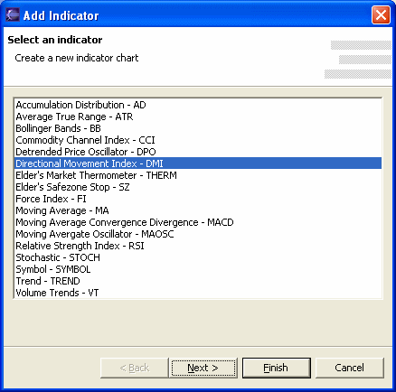
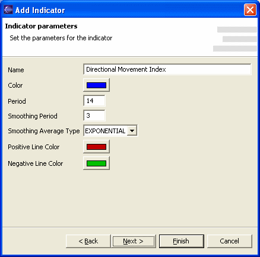

Le finestra dei grafici storici e intraday consentono di visualizzare, oltre all'andamento dei prezzi e dei volumi, anche una serie di indicatori di analisi tecnica. Cliccando con il tasto destro del mouse sul grafico e selezionando le voci Aggiungi e Modifica sarà possibile aggiungere o modificare gli indicatori visualizzati.

Ogni indicatore ha un proprio set di parametri. Selezionando un indicatore sarà visualizzata la dialog che permette di personalizzare i parametri specifici secondo le proprie esigenze.

Name
Nome da assegnare al parametro sul grafico.
Selected Periods e Moving Average Periods
Parametri specifici dell'indicatore Stocastico selezionato. Altri indicatori
mostreranno in queste posizioni i propri parametri specifici. Riferirsi alla
documentazione dell'indicatore per conoscerne il significato e l'utilizzo
nell'analisi tecnica.
Color
Colore con il quale verrà tracciato il grafico relativo all'indicatore.
Insert indicator
Permette di inserire il nuovo indicatore nella zona del grafico selezionata
(On the selected zone) oppure in una nuova zona (On a new zone). La
zona selezionata è quella su cui si è cliccato con il mouse
Per approfondire l'argomento degli indicatori di analisi tecnica e per conoscere nel dettaglio i parametri e le modalità di utilizzo consiglio di visitare questi siti:
BigCharts Glossary: